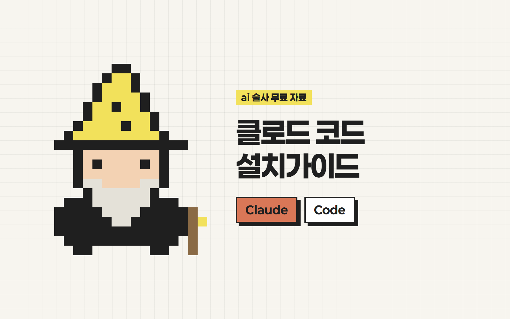
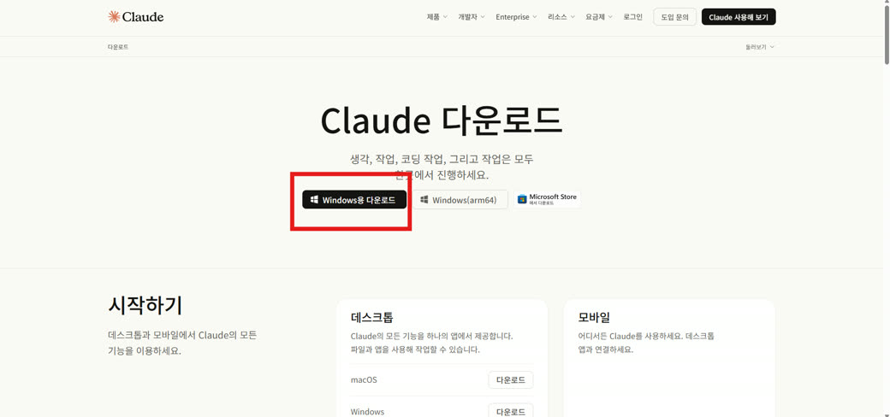
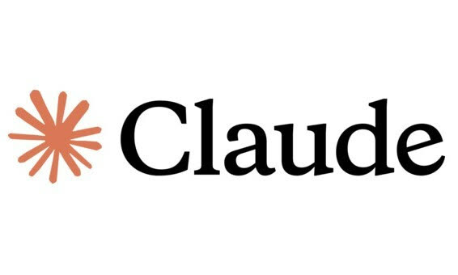
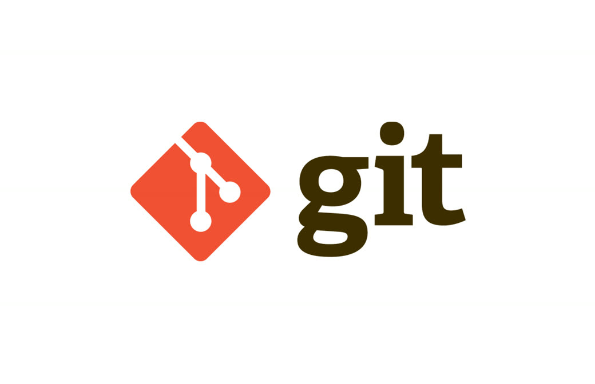
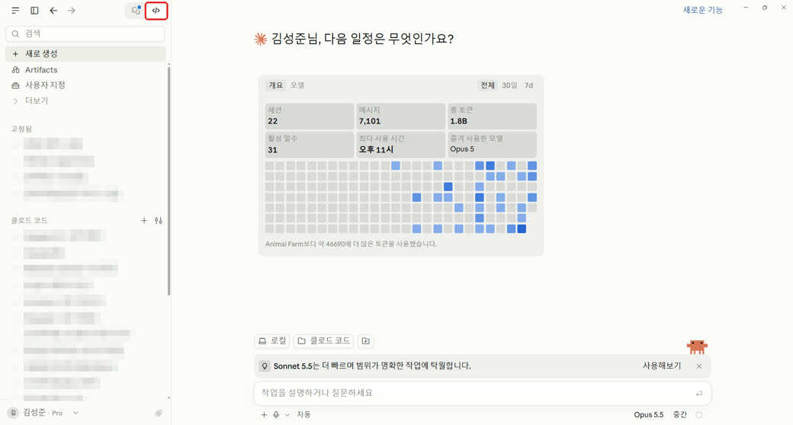
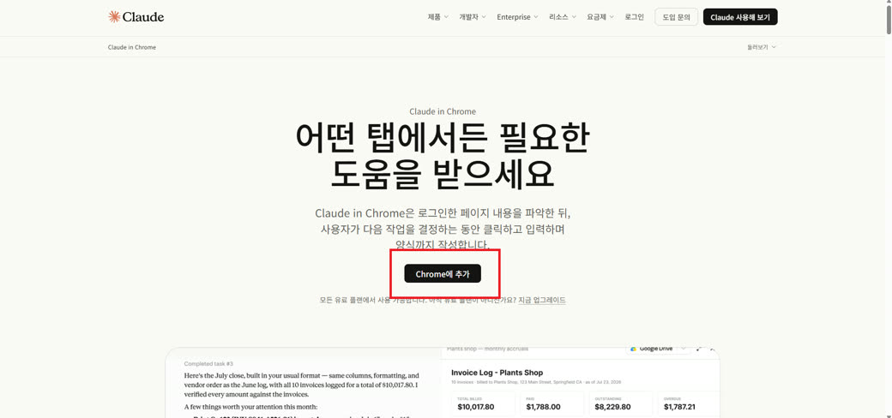
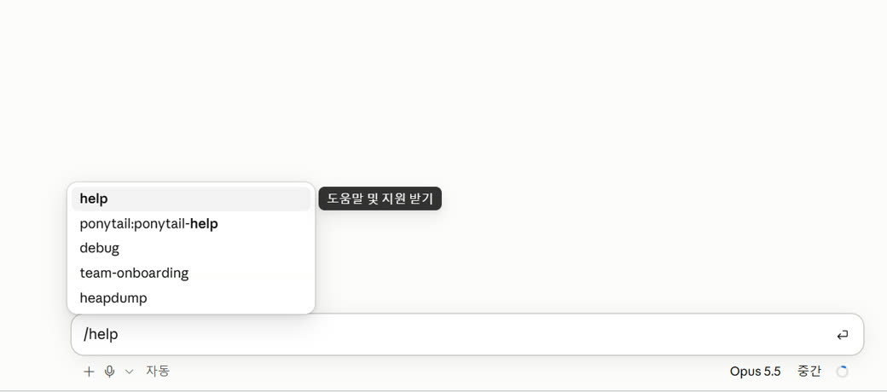
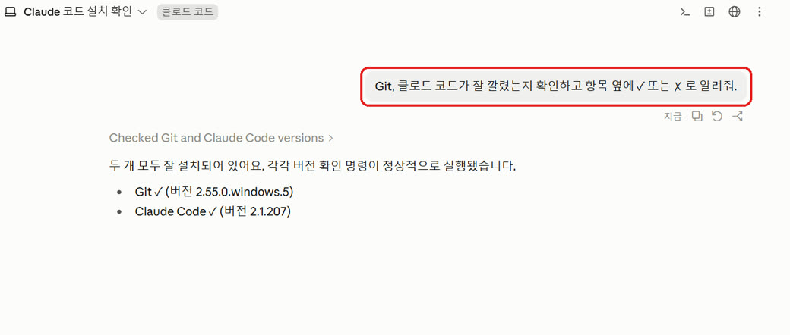

안녕하세요 ai 술사 성준입니다.
클로드 코드
설치가이드 & 활용법
요즘 클로드 코드 활용도가 미친듯이 좋아지고 있어요.
근데 '코드'라니까 복잡해 보이죠?
제가 초간단으로 알려드릴게요.
준비물
- 1Claude 유료 계정Pro · Max · Team · Enterprise 중 하나. 무료 요금제는 Claude Code를 못 써요.
- 2크롬 브라우저
클로드 앱 설치
다운로드 → 설치 → 로그인

- 1크롬에서
claude.ai/download접속 → 내 컴퓨터(맥/윈도우)에 맞는 파일 다운로드 - 2파일을 열어 설치 (맥: Claude 아이콘을 Applications 폴더로 끌어넣기)
앱을 켜고 Claude 계정으로 로그인하면 끝!
Git 설치
있으면 더 편해요


- 1윈도우:
git-scm.com/downloads/win접속 → 다운로드 → Next만 계속 누르기 - 2맥: 대부분 이미 깔려 있어요. 'Git이 필요하다'는 안내가 뜰 때만
git-scm.com/downloads에서 설치
클로드가 작업을 나눠서 안전하게 할 때 쓰는 도구예요.
앱에서 클로드 코드 켜기
왼쪽 위 버튼 하나면 돼요

- 1클로드 앱 왼쪽 위 </> 버튼(Code) 클릭
- 2아래 폴더 버튼에서 작업할 폴더 선택
입력창이 열리면 준비 끝!
크롬 확장 프로그램 설치
클로드가 웹페이지를 보고 같이 일해요

- 1크롬에서 claude.ai에 먼저 로그인
- 2
claude.com/claude-for-chrome접속 → Chrome에 추가 → 권한 확인 - 3주소창 옆 퍼즐 아이콘에서 Claude를 고정(핀)
Claude 아이콘을 누르면 옆 패널이 열려요!
이렇게 써보세요
그냥 말로 시키면 돼요

- 1입력창에 하고 싶은 일을 말하듯 적고 엔터
이 폴더에 뭐가 있는지 쉽게 설명해줘
할 일 목록 웹페이지 하나 만들어줘
입력창에 / 를 치면 쓸 수 있는 명령어가 나와요.
마지막 확인
클로드에게 직접 물어보면 끝!

- 1복사 → 입력창에 붙여넣고 엔터
Git, 클로드 코드가 잘 깔렸는지 확인하고 항목 옆에 ✓ 또는 ✗ 로 알려줘.
전부 ✓ 이면 세팅 완료! 🎉
이제 이런 게 가능해요
- 웹사이트 디자인
- 파일 정리
- 업무 자동화
- 엑셀 · 문서 작업
- 나만의 프로그램 만들기
각 활용법 자세한 팁은 다른 영상에서 알려드릴게요!
궁금하신 점은 DM으로 편하게 물어봐 주세요 🪄
From. ai 술사 | 성준
ai술사의 모든 꿀팁 확인하기!